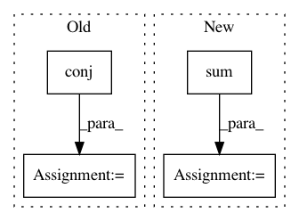

26949ac70fc9cff80e633b0476c306d7809c8263,qiskit/aqua/components/uncertainty_models/multivariate_variational_distribution.py,MultivariateVariationalDistribution,__init__,#MultivariateVariationalDistribution#Any#Any#Any#Any#Any#Any#,81
Before Change
quantum_instance = QuantumInstance(backend=BasicAer.get_backend("statevector_simulator"))
result = quantum_instance.execute(qc_)
result = result.get_statevector(qc_)
values = np.multiply(result, np.conj(result))
values = list(values.real)
probabilities = values
super().__init__(num_qubits, probabilities, low, high)
self._var_form = var_form
self.params = params
self._initial_distribution = initial_distribution
After Change
self._var_form = var_form
self.params = params
self._initial_distribution = initial_distribution
probabilities = np.zeros(2 ** sum(num_qubits))
super().__init__(num_qubits, probabilities, low, high)
self._var_form = var_form
self.params = params
self._initial_distribution = initial_distribution
In pattern: SUPERPATTERN
Frequency: 3
Non-data size: 4
Instances
Project Name: Qiskit/qiskit-aqua
Commit Name: 26949ac70fc9cff80e633b0476c306d7809c8263
Time: 2019-04-30
Author: ouf@zurich.ibm.com
File Name: qiskit/aqua/components/uncertainty_models/multivariate_variational_distribution.py
Class Name: MultivariateVariationalDistribution
Method Name: __init__
Project Name: tensorly/tensorly
Commit Name: 6dfa3d3e9a6a668ca6380134da7db7b63fad7f6a
Time: 2021-02-25
Author: caglayan.tuna@irisa.fr
File Name: tensorly/decomposition/_nn_cp.py
Class Name:
Method Name: non_negative_parafac_hals
Project Name: LCAV/pyroomacoustics
Commit Name: 216fad967ebd8e0df284e2f0e961519321b7a52b
Time: 2019-02-06
Author: ebezzam@gmail.com
File Name: pyroomacoustics/beamforming.py
Class Name: Beamformer
Method Name: process